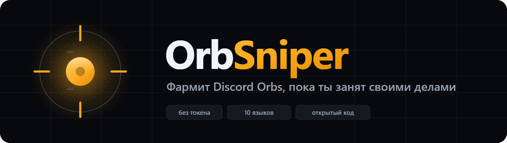
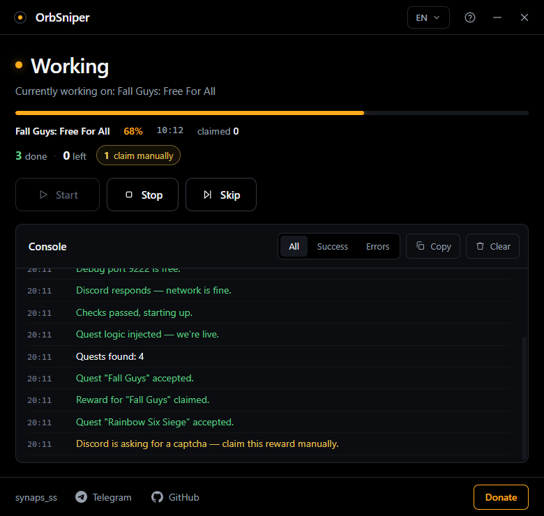
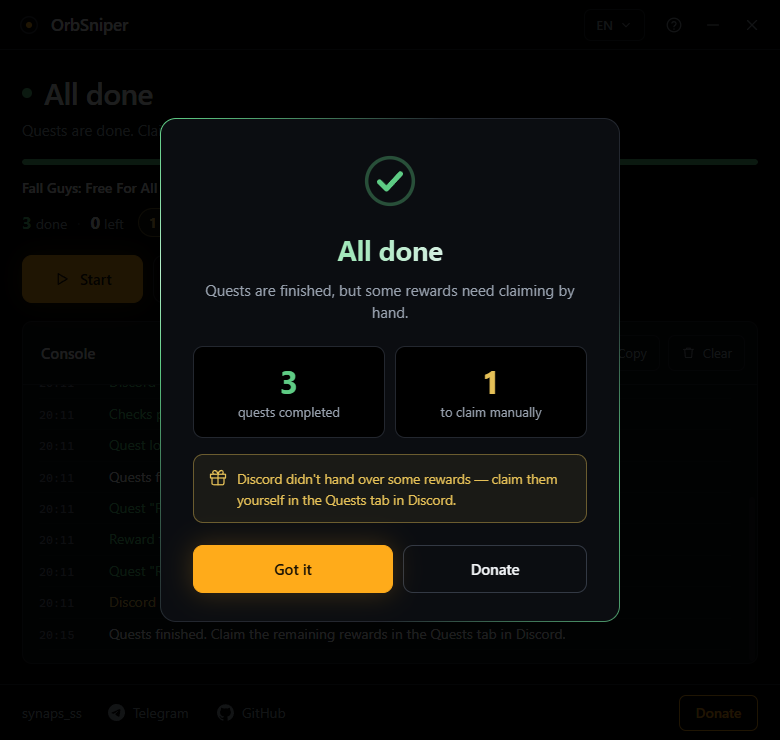

Discord Quests, done while you're away
It accepts the quests, completes them and claims your Orbs — inside your own Discord client.
No token, no game installs, no 500 GB downloads.
One dark window. Press Start and read the console — it tells you what's happening in plain language.

FarmingLive progress, a running score, and a console that says what it's doing.

FinishedTells you what's done and what's still waiting to be claimed by hand.
Orbs are Discord's own currency. You earn them by finishing Quests — those sponsored "play this game for 15 minutes" tasks. A typical quest pays around 700 Orbs.
| Reward | Cost |
|---|---|
| Nitro credit, 3 days | 1,400 Orbs |
| Avatar decorations | varies |
| Profile effects | varies |
| Nameplates | varies |
| Orbs Apprentice badge | 3,500 Orbs |
Seven decorations can only be bought with Orbs — no money gets them. The catch is that quests want you to actually install games and sit through them. OrbSniper does that part instead, so you spend time, not money.
It never asks for one and never reads one. The logic runs inside your own Discord client.
Quests that want a game running are spoofed. No downloads, no disk space burned.
Plain sentences instead of stack traces. Errors in red, successes in green, filters and copy included.
English, Русский, 中文, Español, Português, Deutsch, Français, Polski, Türkçe, Українська.
MIT licence. Read every line before you run it — that's the point of publishing it.
No ads, no telemetry, no premium tier, no account. It stays that way.